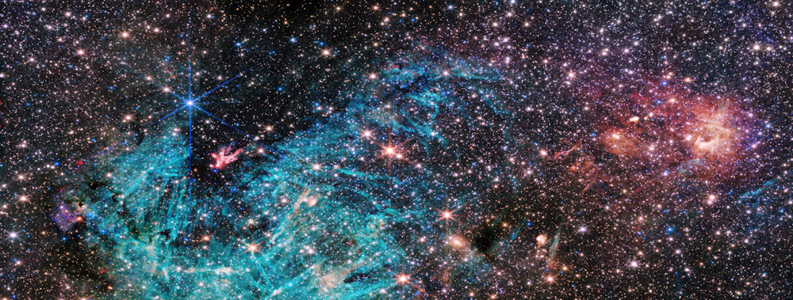

A infinidade de estrelas podem ser observadas pelo equipamento enviado pela NASA James Webb
Imagem da via Láctea

Note acima que a imagem apresenta quintas mil estrelas nessa imagem, loocalizadas na região de
formação estelar conhecida como Sagitário C (Sgr C), localizada a trezentos anos-luz do buraco negro que fica no
centro da Via Láctea, Sagittarius A*